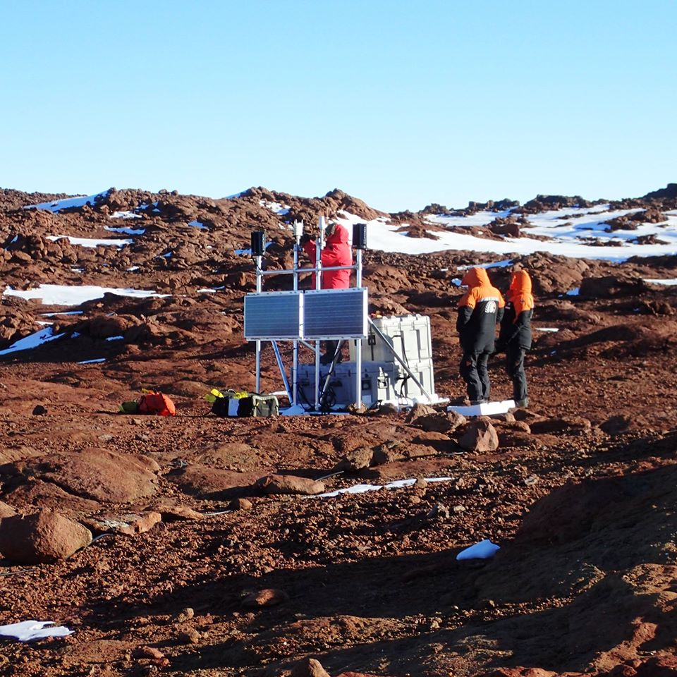

Back to Blog
Visit to Butcher Ridge by Eric Kendrick
It's been a hard day's night! We departed McMurdo around 8:00 pm and flew to Butcher Ridge in a Bell 212. The site is about () southwest of McMurdo. It's at elevation so it can be chilly if the wind is blowing.
The scenery was great but the Butcher was not friendly. The temperature was - (-25° C) and the winds increased from 20 to 25 knots (23 to 29 mph) during the more than three hours we were on the ground. That works out to a wind chill of - (-). No wonder my fingertips still tingle! It's hard to use tools and take notes in conditions like that - but we fixed the station. Lucky for us it had been recording data without problem even though we lost communication with it back in July.

The Butcher Ridge GPS station. Thomas, in the red parka, is replacing the meteorological sensor. The "met pack" measures atmospheric pressure, temperature, humidity, wind speed, and wind direction. We are mainly interested in the pressure, because changes in atmospheric pressure move the bedrock up and down!